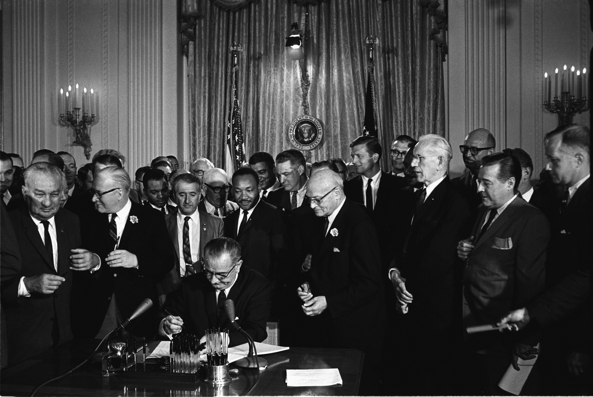
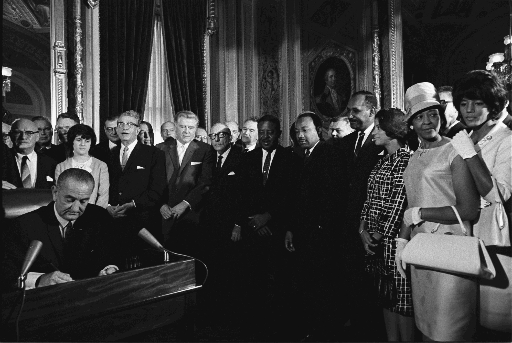

Directions: Work through the five stations in order. Each station holds one record from 1964 and 1965. For each record, work out three entries: the power the record creates, who holds that power, and what the record cannot reach. You will build the full file in Part 2 and judge the two laws from it.
Source: Civil Rights Act of 1964, Title II, Section 201. Text quoted verbatim from the audited TPSP record civil-rights-act-1964; the edition named in that record is U.S. Congress, "Civil Rights Act of 1964," 1964 (Statutes at Large, verified via GovInfo). Cuts are marked with ellipses. The photograph shows President Johnson signing the act in the East Room on July 2, 1964, with Martin Luther King Jr. standing behind him. Photograph by Cecil Stoughton, White House Press Office, held by the LBJ Library.

"All persons shall be entitled to the full and equal enjoyment of the goods, services, facilities, privileges, advantages, and accommodations of any place of public accommodation, as defined in this section, without discrimination or segregation on the ground of race, color, religion, or national origin."
". . . The provisions of this title shall not apply to a private club or other establishment not in fact open to the public, except to the extent that the facilities of such establishment are made available to the customers or patrons of an establishment within the scope of subsection (b)."
File entries. What power does this passage create, and who holds it? State the right in the passage's own words, and name whose conduct the right runs against.
What can this passage not reach? Answer from the second quotation, naming the kind of establishment the title leaves outside, and state the one exception the sentence keeps.
Source: Civil Rights Act of 1964, Title VII, Section 703. Text quoted verbatim from the audited TPSP record civil-rights-act-title-vii-1964; the edition named in that record is U.S. Congress, "Civil Rights Act of 1964, Title VII," 1964 (Equal Employment Opportunity Commission; punctuation modernized). Cuts are marked with ellipses.
"It shall be an unlawful employment practice for an employer - (1) to fail or refuse to hire or to discharge any individual, or otherwise to discriminate against any individual with respect to his compensation, terms, conditions, or privileges of employment, because of such individual's race, color, religion, sex, or national origin; or (2) to limit, segregate, or classify his employees in any way which would deprive or tend to deprive any individual of employment opportunities or otherwise adversely affect his status as an employee, because of such individual's race, color, religion, sex, or national origin."
". . . It shall be an unlawful employment practice for a labor organization - (1) to exclude or to expel from its membership, or otherwise to discriminate against, any individual because of his race, color, religion, sex, or national origin . . ."
File entries. What power does this passage create, and who holds it? Name the two kinds of organization the passage binds, and list the five grounds it names.
What can this passage not reach on its face? The passage names practices and grounds. State what it does not set out, such as a remedy, a penalty, or an officer to enforce it, and explain why that absence limited the title at first.
Source: President Lyndon B. Johnson, address to a joint session of Congress on voting rights, March 15, 1965, eight days after Bloody Sunday. Text quoted verbatim from the audited TPSP record lbj-we-shall-overcome-1965; the edition named in that record is Lyndon B. Johnson, "We Shall Overcome," March 15, 1965 (LBJ Presidential Library; punctuation normalized). Cuts are marked with ellipses.
"I speak tonight for the dignity of man and the destiny of democracy."
"Every American citizen must have an equal right to vote. There is no reason which can excuse the denial of that right. There is no duty which weighs more heavily on us than the duty we have to ensure that right."
"There is no Negro problem. There is no Southern problem. There is no Northern problem. There is only an American problem."
"Their cause must be our cause too. Because it is not just Negroes, but really it is all of us, who must overcome the crippling legacy of bigotry and injustice. And we shall overcome."
File entries. This record creates no law. State instead the power it works with: what does the president ask Congress to do, and in whose words does he frame the cause? Quote the sentence that carries the framing.
What can this record not reach by itself? Name what a speech cannot do that a statute can, using the Selma facts from the reading as your evidence.
Source: Voting Rights Act of 1965, Sections 2 and 4. Text quoted verbatim from the audited TPSP record voting-rights-act-1965; the edition named in that record is U.S. Congress, "Voting Rights Act of 1965," 1965 (DocsTeach). Cuts are marked with ellipses. The photograph shows President Johnson signing the act at the Capitol on August 6, 1965, with Martin Luther King Jr. and other leaders looking on. Photograph by Yoichi Okamoto, held by the LBJ Library.

"SEC. 2. No voting qualification or prerequisite to voting, or standard, practice, or procedure shall be imposed or applied by any State or political subdivision to deny or abridge the right of any citizen of the United States to vote on account of race or color."
"SEC. 4. (a) . . . no citizen shall be denied the right to vote in any Federal, State, or local election because of his failure to comply with any test or device in any State with respect to which the determinations have been made under subsection (b) . . ."
"(c) The phrase "test or device" shall mean any requirement that a person as a prerequisite for voting or registration for voting (1) demonstrate the ability to read, write, understand, or interpret any matter, (2) demonstrate any educational achievement or his knowledge of any particular subject, (3) possess good moral character, or (4) prove his qualifications by the voucher of registered voters or members of any other class."
File entries. What powers does this passage create, and who holds them? Name the ban Section 2 states, the suspension Section 4 works, and the two federal officers the full act puts behind the suspension, from the reading.
What can this passage not reach? Section 4 works only where the coverage determinations have been made. State what that limit means for a state or county outside the formula, and name one subject the whole act leaves untouched.
Source: President Lyndon B. Johnson, commencement address at Howard University, "To Fulfill These Rights," June 4, 1965, spoken between the Selma address and the signing of the Voting Rights Act. Text quoted verbatim from the audited TPSP record lbj-howard-university-address-1965; the edition named in that record is Lyndon B. Johnson, "Howard University Commencement Address," June 4, 1965 (American Rhetoric). Cuts are marked with ellipses.
". . . But freedom is not enough. You do not wipe away the scars of centuries by saying, "Now you are free to go where you want, and do as you desire, and choose the leaders you please.""
"You do not take a person who, for years, has been hobbled by chains and liberate him, bring him up to the starting line of a race and then say, "You are free to compete with all the others," and still justly believe that you have been completely fair."
"Thus it is not enough just to open the gates of opportunity. All our citizens must have the ability to walk through those gates. And this is the next and the more profound stage of the battle for civil rights."
"We seek not just freedom but opportunity. We seek not just legal equity but human ability, not just equality as a right and a theory, but equality as a fact, and equality as a result."
File entries. What does this record claim the two laws, for all their reach, cannot by themselves deliver? Answer with the starting line image and the closing sentence, quoted or closely paraphrased.
Who holds the power this record calls for next, and what stage of the battle does Johnson name it? State the stage in his words, and say whether the record assigns the work to Congress, to the movement, or to the country as a whole.
Complete the file from your station work. Then answer the verdict question in a paragraph, defending your judgment from the texts.
| Record | Power it creates | Who holds it | What it cannot reach |
|---|---|---|---|
| 1. Title II, 1964 | |||
| 2. Title VII, 1964 | |||
| 3. The Selma address, 1965 | |||
| 4. The Voting Rights Act, 1965 | |||
| 5. The Howard address, 1965 |
The verdict. Which single provision in this file did the most work in the decade after 1965? Name the provision, state the work it did with evidence from at least two stations, and answer the strongest claim for one other provision.
What power does the passage create, and who holds it? The passage creates an individual right, held by every person, to the full and equal enjoyment of the goods, services, facilities, privileges, advantages, and accommodations of any place of public accommodation, without discrimination or segregation on the ground of race, color, religion, or national origin. The right runs against the establishments that serve the public, the hotels, restaurants, lunch counters, theaters, and stations the act defines, and it is enforceable in federal court rather than left to the custom of each town.
What can the passage not reach? A private club or other establishment not in fact open to the public stands outside the title. The exception the sentence keeps is narrow: a private club loses the shelter to the extent its facilities are made available to the customers or patrons of a covered establishment. Credit requires both the exclusion and the exception, because the line between public and private is where the act's coverage fights were fought.
What power does the passage create, and who holds it? The passage makes discrimination in employment unlawful, a protection held by individual workers and applicants. It binds two kinds of organization, employers and labor organizations, and the record also binds employment agencies. The five grounds are race, color, religion, sex, and national origin, and the practices covered run from hiring and discharge through pay, terms, classification, and union membership.
What can the passage not reach on its face? The text states duties without machinery. It names no remedy, no penalty, and no enforcing officer, and the commission the act created could at first investigate and seek settlements but could not order an employer to stop, which is why Title VII's promise ran ahead of its enforcement until Congress strengthened it later. Students should also note the ground the title does not name, such as age or disability, which later statutes took up.
What power does the record work with? Persuasion backed by office. The president asks Congress to pass a voting bill, and he frames the cause as the country's own, in the sentence, "Their cause must be our cause too," closing with the movement's words, "And we shall overcome." The framing sentence for full credit is the problem sentence: "There is no Negro problem. There is no Southern problem. There is no Northern problem. There is only an American problem." A southern president adopting the movement's anthem before Congress is the record's evidence, and students should say what it evidences, that Selma had moved the presidency itself.
What can the record not reach by itself? A speech registers no one. It cannot suspend a literacy test, seat a federal examiner in a county courthouse, or protect a marcher on a bridge. Selma is the evidence: registration in Dallas County had survived earlier statutes and years of lawsuits, and it took the act of August 1965, with machinery, to change the county's rolls.
What powers does the passage create, and who holds them? Section 2 states a nationwide ban, held by every citizen, on any voting qualification, standard, practice, or procedure used to deny or abridge the vote on account of race or color. Section 4 suspends tests and devices in covered states and counties, and the definition in subsection (c) reaches reading and interpretation tests, knowledge tests, character requirements, and voucher rules. The federal officers behind the machinery are the Attorney General, whose determinations trigger coverage, and the federal examiners the act sent to register voters directly, with the preclearance duty requiring covered states to clear voting changes with Washington first.
What can the passage not reach? The suspension works only where the coverage determinations have been made, in places that had kept a test or device on November 1, 1964 and had registered or turned out fewer than half their voting-age residents. A jurisdiction outside the formula kept its procedures unless a court acted under Section 2. The act also leaves untouched the subjects Stations 1, 2, and 5 mark: housing, wealth, and the results Johnson named at Howard.
What does the record claim the laws cannot deliver? Equal standing at the start. A person hobbled by chains for years, liberated and brought to the starting line, has not been treated fairly by the opening of the gates alone, because the gates assume an ability to walk through them that centuries of subjection were meant to destroy. The closing sentence states the standard in full: equality not just as a right and a theory, but equality as a fact and as a result.
Who holds the power this record calls for next? Johnson names the work "the next and the more profound stage of the battle for civil rights" and assigns it to the country as a whole, speaking as its president to a graduating class of its Black university. The address proposes no single statute in this excerpt. Its claim is that the stage after legal freedom is ability and result, which is why the same passage returns in Lesson 8 when the unit weighs affirmative action.
| Record | Power it creates | Who holds it | What it cannot reach |
|---|---|---|---|
| 1. Title II, 1964 | A right to full and equal enjoyment of places of public accommodation, without discrimination on the ground of race, color, religion, or national origin. | Every person, against establishments serving the public, enforceable in federal court. | Private clubs and establishments not in fact open to the public, except where their facilities serve a covered establishment's patrons. |
| 2. Title VII, 1964 | A ban on discrimination in hiring, firing, pay, classification, and union membership on five named grounds. | Workers and applicants, against employers, employment agencies, and labor organizations. | On its face, enforcement: no remedy, penalty, or officer is named in these sections, and the first commission could not issue orders. |
| 3. The Selma address, 1965 | No law. A presidential summons to Congress, framing voting rights as an American problem in the movement's own words. | The president, by persuasion and office; the words themselves borrowed from the movement. | Registration itself: no test suspended, no examiner seated, no marcher protected by a speech. |
| 4. The Voting Rights Act, 1965 | A nationwide ban on discriminatory voting rules, suspension of tests and devices in covered places, federal examiners, and preclearance of voting changes. | Every citizen holds the Section 2 right; the Attorney General and federal examiners work the machinery against covered states and counties. | Places outside the coverage formula, where procedures stood unless a court acted, and the whole field of housing, wealth, and results. |
| 5. The Howard address, 1965 | A standard for judging the laws: equality as a fact and as a result, and ability to walk through opened gates. | The country as a whole, in Johnson's framing; no single office is assigned the stage in this excerpt. | It enacts nothing itself, and it concedes the point the file makes: opening gates does not supply the ability the centuries took. |
Verdict grading guide. Judgments may land on different provisions and earn full credit when defended from two stations. The strongest cases are usually made for the suspension of tests and devices with federal examiners, measured by the reading's arithmetic of a quarter of a million new voters by the end of 1965 and Mississippi's move toward sixty percent; or for Title II, measured by the speed with which public accommodations desegregated once the right ran in federal court rather than town by town. A verdict for Title VII must reckon with its missing machinery at first, and a verdict for the Howard standard must show work done by a standard, in the arguments and programs of the following decade, rather than by a rule. Any verdict that treats the Selma address as a law, or that claims the Voting Rights Act's suspension ran nationwide without the coverage formula, has misread Stations 3 and 4.